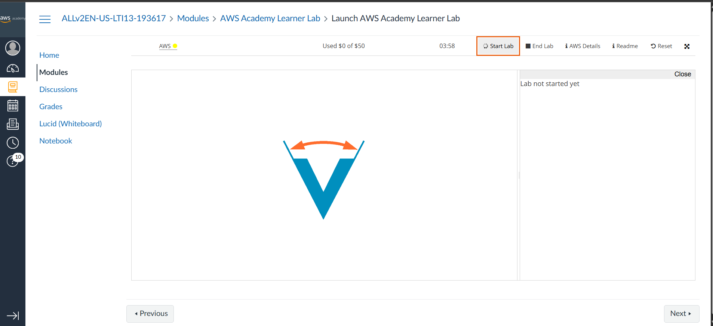
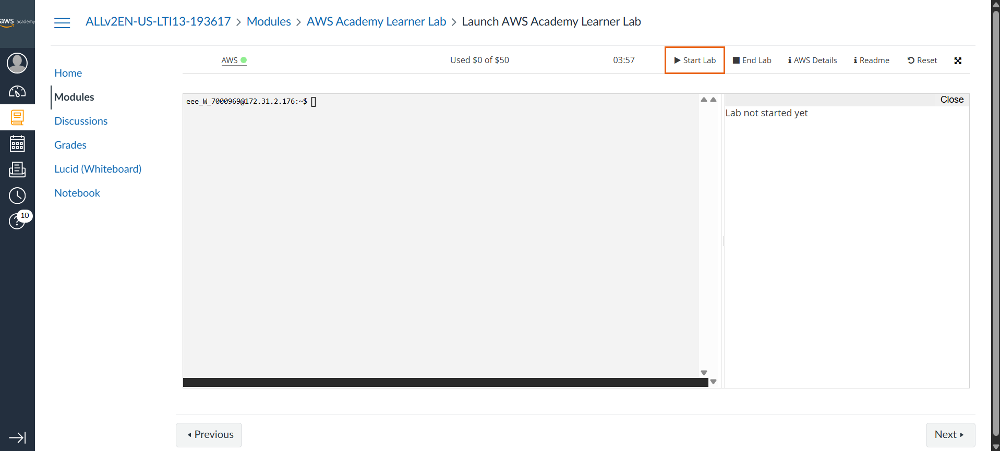
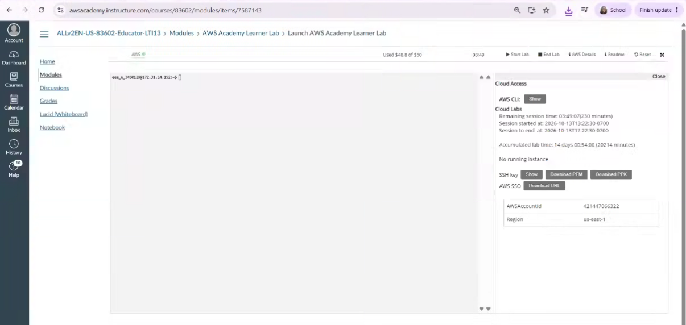

Atelier 01 : Provisionnement du Cluster — D'un cluster mono-nœud avec Minikube au cluster multi-nœuds avec Kubeadm¶
Objectifs Pédagogiques :¶
- Installer un cluster local Minikube.
- Provisionner les 3 instances EC2 du cluster avec Terraform.
- Se connecter aux 3 nœuds en SSH.
- Assembler un cluster multi-nœuds avec Kubeadm et le CNI Calico.
- Administrer le cluster depuis son poste avec
kubectl.
Compatibilité OS
Sur votre poste, les commandes sont données pour Windows (PowerShell) et Linux/macOS (Bash) lorsqu'elles diffèrent. Les nœuds sont sous Ubuntu.
Environnement : votre poste, puis les 3 nœuds du cluster
Le libellé en gras au-dessus de chaque bloc indique où lancer les commandes : Votre poste, ou un nœud dans une session SSH (k8s-control — SSH, Les trois nœuds — SSH…).
Contexte Métier¶
Le Campus Summer Portal (frontend Nginx, API Spring Boot, base PostgreSQL) se développe sur Minikube, mais s'éprouve sur un cluster multi-nœuds : 1 Control Plane et 2 Workers, que vous allez construire.
| Qui ? | Fait quoi ? |
|---|---|
| Terraform | Crée 3 instances EC2 sur AWS. |
bootstrap.sh (au démarrage des instances) |
Installe containerd, kubeadm, kubelet, kubectl. |
| Vous | Initialisez le Control Plane, installez Calico et raccordez les Workers. |
Budget AWS Academy : 50 $ pour toute la formation
Éteignez vos instances chaque soir (encadré « Maîtriser le budget » de l'étape 6 de l'exercice 2).
Étape 0 : Récupérer le dépôt de la formation¶
Votre poste
Tous les chemins de l'atelier sont relatifs à ce dossier formation.
Exercice 1 : Le cluster local avec Minikube¶
Étape 1 : Installer Minikube¶
Prérequis : 2 vCPU, 4 Go de RAM libres et Docker Desktop démarré.
Votre poste
Si minikube n'est pas reconnu :
| Système | Commande |
|---|---|
| Windows (PowerShell) | winget install Kubernetes.minikube |
| macOS | brew install minikube |
| Linux | curl -LO https://storage.googleapis.com/minikube/releases/latest/minikube-linux-amd64 && sudo install minikube-linux-amd64 /usr/local/bin/minikube |
Poste verrouillé (pas de Docker, pas de droits admin) ?
Passez directement à l'exercice 2.
Étape 2 : Démarrer le cluster¶
Votre poste
Résultat attendu : un seul nœud, minikube, à l'état Ready.
Exercice 2 : Provisionner l'infrastructure AWS avec Terraform¶
Étape 1 : Démarrer le Learner Lab¶
- Connectez-vous à votre compte AWS Academy, entrez dans le cours AWS Academy Learner Lab, cliquez sur Modules dans le menu de gauche, puis sur Launch AWS Academy Learner Lab.

- Cliquez sur Start Lab.

- Attendez que le voyant passe au vert :

Étape 2 : Récupérer la clé SSH¶
Cliquez sur AWS Details :

- Download SSH Key : enregistrez
labsuser.pemdanslabs/01-Installation-Cluster/terraform/. - AWS CLI → Show : gardez cette fenêtre ouverte pour l'étape 5.
Sécurité
Ne committez et ne partagez jamais la clé .pem ni les identifiants AWS.
Étape 3 : Installer Terraform et l'AWS CLI¶
Votre poste
Si une commande n'est pas reconnue, installez l'outil puis rouvrez votre terminal :
| Système | Terraform | AWS CLI |
|---|---|---|
| Windows (PowerShell) | winget install HashiCorp.Terraform |
winget install Amazon.AWSCLI |
| macOS | brew tap hashicorp/tap && brew install hashicorp/tap/terraform |
brew install awscli |
| Linux | Procédure APT HashiCorp | Procédure AWS |
Étape 4 : Se placer dans le dossier Terraform¶
Votre poste
Résultat attendu :
Étape 5 : Enregistrer les identifiants AWS¶
Terraform a besoin de vos identifiants AWS pour créer les instances.
1. Fixer la région (une seule fois) :
Votre poste
2. Enregistrer les identifiants : dans AWS Details → AWS CLI → Show, copiez tout le bloc (de [default] à la fin de aws_session_token=...), puis collez-le à la place de tout le contenu du fichier credentials, et enregistrez :
| Système | Fichier |
|---|---|
| Windows | C:\Users\<votre_nom>\.aws\credentials |
| macOS / Linux | ~/.aws/credentials |
Le fichier n'existe pas ? Créez-le, nommé exactement credentials, sans extension.
3. Vérifier :
Votre poste
Résultat attendu : un Arn contenant voclabs.
Indice : ExpiredToken alors que le fichier vient d'être mis à jour
Des variables d'environnement AWS_* sont définies dans votre terminal et priment sur le fichier. Ouvrez un nouveau terminal, ou supprimez-les :
- PowerShell :
Remove-Item Env:AWS_ACCESS_KEY_ID, Env:AWS_SECRET_ACCESS_KEY, Env:AWS_SESSION_TOKEN -ErrorAction SilentlyContinue - Bash :
unset AWS_ACCESS_KEY_ID AWS_SECRET_ACCESS_KEY AWS_SESSION_TOKEN
Session AWS expirée (après 4 h) ? Rafraîchissez les identifiants
- Sur AWS Academy, ouvrez le cours AWS Academy Learner Lab → Modules → Launch AWS Academy Learner Lab, puis cliquez sur Start Lab et attendez le voyant vert.
- Copiez le nouveau bloc AWS Details → AWS CLI → Show à la place du contenu du fichier
credentials. - Vérifiez avec
aws sts get-caller-identity, puis relancez vos instances si besoin (start-session).
Étape 6 : Lancer le provisionnement¶
Votre poste
Résultat attendu : en 1 minute environ, les 3 instances sont créées et terraform output affiche leurs IP publiques et privées.
Indice : terraform apply échoue
ExpiredToken/InvalidClientTokenId: identifiants expirés ou incomplets (encadré « Session AWS expirée » de l'étape 5).UnauthorizedOperation: seules les régionsus-east-1etus-west-2sont autorisées.InvalidKeyPair.NotFound: la paire de clés doit s'appelervockey.
Maîtriser le budget : pause du soir et destruction finale
Le soir, éteignez les instances (le cluster est conservé). Depuis le dossier terraform/ :
Votre poste — Windows (PowerShell)
Votre poste — Linux / macOS (Bash)
Le matin, relancez-les, toujours depuis le dossier terraform/ :
Votre poste — Windows (PowerShell)
Votre poste — Linux / macOS (Bash)
Résultat attendu : un tableau liste les 3 instances avec leurs IP privées et publiques, suivi de la commande SSH vers k8s-control. Les workers changent d'IP publique : utilisez les adresses de ce tableau. k8s-control garde la sienne (Elastic IP).
En fin de formation, supprimez tout :
Exercice 3 : Installer le cluster avec Kubeadm¶
Étape 1 : Ouvrir une session SSH sur chaque nœud¶
Depuis le dossier terraform/, restreignez les droits de la clé (une seule fois), puis connectez-vous à k8s-control :
Votre poste — Windows (PowerShell)
icacls .\labsuser.pem /inheritance:r
icacls .\labsuser.pem /grant:r "$($env:USERNAME):(R)"
ssh -i .\labsuser.pem ubuntu@<IP_PUBLIQUE_CONTROL>
Votre poste — Linux / macOS (Bash)
Ouvrez deux autres terminaux (ou onglets) : un pour k8s-worker-1, un pour k8s-worker-2.
Dans chaque nouveau terminal, replacez-vous d'abord dans labs/01-Installation-Cluster/terraform
Un nouveau terminal démarre dans votre dossier personnel, où labsuser.pem n'existe pas. Sans ce cd, ssh échoue avec Identity file ... not accessible puis Permission denied (publickey).
Votre poste — Windows (PowerShell) — terminal 2 (k8s-worker-1) :
cd <CHEMIN>\formation\labs\01-Installation-Cluster\terraform
ssh -i .\labsuser.pem ubuntu@<IP_PUBLIQUE_WORKER_1>
Terminal 3 (k8s-worker-2) :
cd <CHEMIN>\formation\labs\01-Installation-Cluster\terraform
ssh -i .\labsuser.pem ubuntu@<IP_PUBLIQUE_WORKER_2>
Votre poste — Linux / macOS (Bash) — terminal 2 (k8s-worker-1) :
cd <CHEMIN>/formation/labs/01-Installation-Cluster/terraform
ssh -i labsuser.pem ubuntu@<IP_PUBLIQUE_WORKER_1>
Terminal 3 (k8s-worker-2) :
cd <CHEMIN>/formation/labs/01-Installation-Cluster/terraform
ssh -i labsuser.pem ubuntu@<IP_PUBLIQUE_WORKER_2>
<CHEMIN> est le dossier où vous avez cloné le dépôt à l'étape 0. Les IP sont données par terraform output :
| Nœud | IP (terraform output) |
Prompt attendu |
|---|---|---|
k8s-control |
control_plane_public_ip |
ubuntu@k8s-control:~$ |
k8s-worker-1 |
worker_1_public_ip |
ubuntu@k8s-worker-1:~$ |
k8s-worker-2 |
worker_2_public_ip |
ubuntu@k8s-worker-2:~$ |
Le prompt affiche ubuntu@ip-172-31-… ? L'installation n'est pas terminée : reconnectez-vous dans une minute.
Étape 2 : Vérifier que les nœuds sont prêts¶
Les trois nœuds — SSH
Résultat attendu : status: done et v1.30.x sur chaque nœud.
Étape 3 : Initialiser le Control Plane¶
Remplacez <IP_PUBLIQUE_CONTROL> par la valeur control_plane_public_ip de terraform output :
k8s-control — SSH
sudo kubeadm init --pod-network-cidr=192.168.0.0/16 --apiserver-cert-extra-sans=<IP_PUBLIQUE_CONTROL>
| Option | Rôle |
|---|---|
--pod-network-cidr |
Plage d'adresses des Pods (Calico) |
--apiserver-cert-extra-sans |
Ajoute l'IP publique au certificat de l'API Server, pour que kubectl la joigne depuis votre poste (étape 1 de l'exercice 4) |
Ne copiez pas la commande kubeadm join … affichée par kubeadm init
Elle est coupée sur deux lignes (avec un \ et une tabulation). Copiée-collée depuis le terminal, elle arrive cassée et provoque des erreurs du type accepts at most 1 arg(s), received 2 ou --discovery-token-ca-cert-hash: command not found. À l'étape 4, vous générerez une version sur une seule ligne.
Étape 4 : Raccorder les Workers¶
1. Générer la commande join sur une seule ligne
k8s-control — SSH
Résultat attendu : une seule ligne commençant par kubeadm join 172.31.…:6443 --token …. Copiez-la entièrement.
2. Exécuter la commande sur chaque worker
Dans le terminal de k8s-worker-1, puis dans celui de k8s-worker-2 (connectés depuis labs/01-Installation-Cluster/terraform, étape 1), tapez sudo puis collez la ligne copiée :
k8s-worker-1 et k8s-worker-2 — SSH
sudo kubeadm join <IP_PRIVEE_CONTROL>:6443 --token <token> --discovery-token-ca-cert-hash sha256:<hash>
Résultat attendu : This node has joined the cluster.
Indice : le join échoue au collage
accepts at most 1 arg(s)oucommand not found: la commande a été collée sur plusieurs lignes. Régénérez-la (point 1) et collez-la sur une seule ligne.Permission denied/must be run as root: vous avez oubliésudo.[ERROR FileAvailable--etc-kubernetes-kubelet.conf]ouPort 10250 is in use: unjoinprécédent a échoué à mi-chemin. Nettoyez le worker puis relancez lejoin:
- Le token expire au bout de 24 h : relancez simplement le point 1.
Étape 5 : Donner à kubectl l'accès au cluster¶
kubeadm init a créé le fichier de connexion administrateur /etc/kubernetes/admin.conf (kubeconfig). Copiez-le là où kubectl le cherche :
k8s-control — SSH
mkdir -p $HOME/.kube
sudo cp -i /etc/kubernetes/admin.conf $HOME/.kube/config
sudo chown $(id -u):$(id -g) $HOME/.kube/config
kubectl get nodes
Résultat attendu : les 3 nœuds (k8s-control, k8s-worker-1, k8s-worker-2) apparaissent en NotReady, car aucun plugin réseau (CNI) n'est encore installé.
Étape 6 : Installer le plugin réseau Calico (CNI)¶
k8s-control — SSH
kubectl create -f https://raw.githubusercontent.com/projectcalico/calico/v3.28.0/manifests/calico.yaml
kubectl get nodes -w
Résultat attendu : après 30 secondes à 1 minute, les 3 nœuds passent Ready. Quittez avec Ctrl + C.
Étape 7 : Valider le cluster¶
k8s-control — SSH
Résultat attendu : les 3 nœuds sont Ready (en 1 minute environ), et les pods calico-node et coredns sont Running.
NAME STATUS ROLES AGE VERSION
k8s-control Ready control-plane 3m v1.30.x
k8s-worker-1 Ready <none> 1m v1.30.x
k8s-worker-2 Ready <none> 1m v1.30.x
Indice : un worker reste NotReady
- Sur le worker,
cloud-init statusdoit afficherdone; sinon, relancez lejoinune fois l'installation terminée. - Le pod
calico-nodedu worker doit êtreRunning:kubectl get pods -n kube-system -o wide | grep calico-node.
Étape 8 : Installer les composants additionnels de la formation¶
Le script installe l'outil de stockage local-path, Ingress NGINX (NodePort 30080), Helm et l'alias k :
k8s-control — SSH
bash ~/labs/01-Installation-Cluster/scripts/setup-addons.sh
source ~/.bashrc
kubectl get storageclass
kubectl get pods -n ingress-nginx
Résultat attendu : local-path (default) et le contrôleur Ingress Running.
Indice : le dossier ~/labs n'existe pas
Exercice 4 : Administrer le cluster depuis votre poste¶
Étape 1 : Récupérer le kubeconfig sur votre poste¶
Le script get-kubeconfig copie le kubeconfig de k8s-control dans terraform/kubeconfig.yaml, y remplace l'IP privée de l'API Server par l'IP publique, puis teste la connexion. Depuis le dossier terraform/ :
Votre poste — Windows (PowerShell)
Votre poste — Linux / macOS (Bash)
Résultat attendu : le script affiche les 3 nœuds Ready.
Ce fichier donne tous les droits sur votre cluster
Ne committez et ne partagez jamais kubeconfig.yaml.
Indice : le script échoue
-
x509: certificate is valid for …, not <IP_PUBLIQUE>: le cluster a été initialisé sans--apiserver-cert-extra-sans. Surk8s-control, régénérez le certificat de l'API Server, puis relancez le script : -
Permission denied (publickey)ou délai dépassé : vérifiez l'IP (terraform output control_plane_public_ip) et les droits de la clé (étape 1 de l'exercice 3). - Windows : « l'exécution de scripts est désactivée » : lancez d'abord
Set-ExecutionPolicy -Scope Process Bypass. - Windows : « … n'est pas signé numériquement » (dépôt récupéré en
.zip) : Windows marque les scripts comme téléchargés d'Internet. Débloquez-les une fois avecGet-ChildItem -Recurse -Filter *.ps1 | Unblock-File, ou utilisezSet-ExecutionPolicy -Scope Process Bypass.
Étape 2 : Utiliser ce kubeconfig dans votre terminal¶
Depuis le dossier terraform/ :
Votre poste — Windows (PowerShell)
Votre poste — Linux / macOS (Bash)
Une variable par terminal
Redéfinissez KUBECONFIG dans chaque nouveau terminal, aux ateliers suivants également.
Étape 3 : Choisir votre modalité de travail (Ateliers 03 à 07)¶
| Option A : poste local (recommandée) | Option B : SSH sur k8s-control |
|
|---|---|---|
| Quand ? | kubectl installé et port 6443 accessible |
Poste d'entreprise verrouillé |
| Comment ? | kubectl lancé depuis votre poste, avec KUBECONFIG |
Commandes lancées dans la session SSH, manifests dans ~/labs/ |
Critères de Validation (Checklist)¶
-
minikube statusindique un cluster en fonctionnement (sauf poste verrouillé). -
terraform outputaffiche les IP des 3 instances. -
kubectl get nodesaffichek8s-control,k8s-worker-1etk8s-worker-2à l'étatReady. -
kubectl get pods -n kube-system:calico-nodeetcorednssontRunning. -
kubectl get storageclassaffichelocal-path (default). -
kubectl get pods -n ingress-nginx: le contrôleur estRunning. -
kubectl get nodesfonctionne depuis votre poste (Option A) ou depuisk8s-control(Option B).
👉 Rendez-vous à l'Atelier 02 : Les Pods.